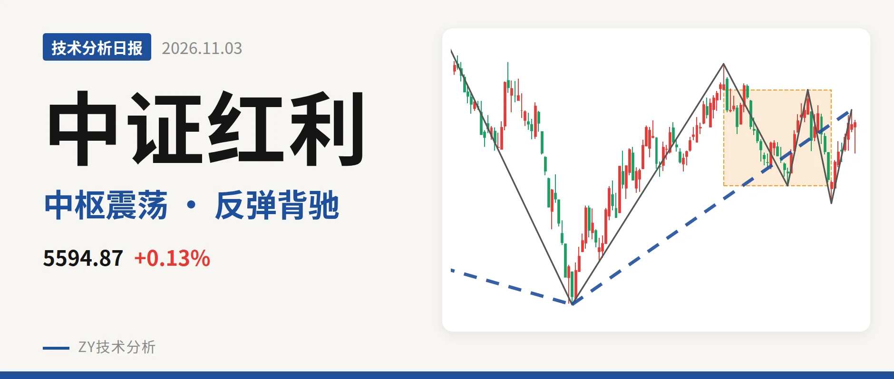
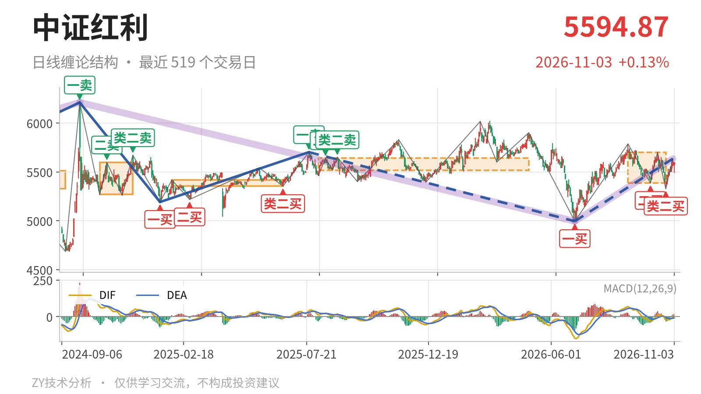

中证红利｜反弹不新高，5701点压制

最近日线中枢 5386.04—5701.06点，收盘位于中枢之内
一句话：最新价仍在最近中枢内，反弹不新高、红柱面积缩小，走势中性偏弱。
📉 走势结构：大级别未脱震荡，日线反弹仍受限
更大级别上，2022年11月1日线段一买4541.71点之后没有线段级卖点，2023年10月23日二买4894.86点仍是有效承接，多头结构没有被破坏。日线线段上，2025年7月23日5702.03点至2026年6月30日4995.49点的下跌段走出11笔后转为反弹；6月30日至11月2日上涨线段涨到5635.21点，目前没有结束。但这波反弹高点没有越过10月14日5701.06点，因此上涨线段尚未脱离中枢，暂时只能看作日线级别的回升。

🧭 中枢与位置：价格在中枢上半区，中枢扩展
最近日线笔中枢是9月1日至10月23日的5386.04—5701.06点，最新价5594.87点落在其中，上方距上沿约106点，下方距下沿约209点。它与2025年8月4日至2026年4月30日中枢5518.46—5639.99点大幅重叠，中轴从5579.23点降到5543.55点，只回落约36点，属于中枢扩展而非单边下移。价格收在中轴上方，但未突破上沿，位置不算强。
🎯 买卖点：类二买成为短线承接，二买降级
日线笔级别上，10月23日类二买5328.30点是最近的低点，它没有跌破6月30日一买4995.49点。9月29日二买5386.04点被10月23日下探跌破后，只能作更小级别买点看待。线段级别没有出现卖点，所以大级别结构仍未被破坏，当前回撤仍在日线中枢范围内。

⚡ 背驰：反弹不新高，红柱面积明显收缩
10月23日至11月2日上涨笔与9月29日至10月14日上涨笔相比，红柱面积从85缩到23，DIF高点从11.1降到-3.0。价格高点只有5635.21点，没有越过前高5701.06点。反弹不新高、力度又不配合，是典型的中枢内回落前的笔背驰。最新日线DIF为2.1，刚在零轴上方，红柱面积有限，也说明这波反弹动能不足。11月3日单日最低5491.61点，尚未成笔，但不影响上述背驰判断。
🔎 关键位置观察：5701点定强弱，5386点守结构
若后续反弹能重新站上5701点，最近笔背驰会被修复，结构转强。若不能站上5701点，反弹只能视为中枢震荡。下方5386点是最近中枢下沿，维持其上方则中枢结构不变；跌破后看5328点。若5328点也失守，10月23日类二买被破坏，回落将考验4995点附近。当前结构弱在反弹不创新高、红柱面积收缩，好在价格仍在最近中枢上半区，判断为中性偏弱。
⚠️ 本文为基于公开行情数据的缠论技术结构记录，由程序自动计算并生成，仅供学习交流，不构成任何投资建议。市场有风险，投资需谨慎。